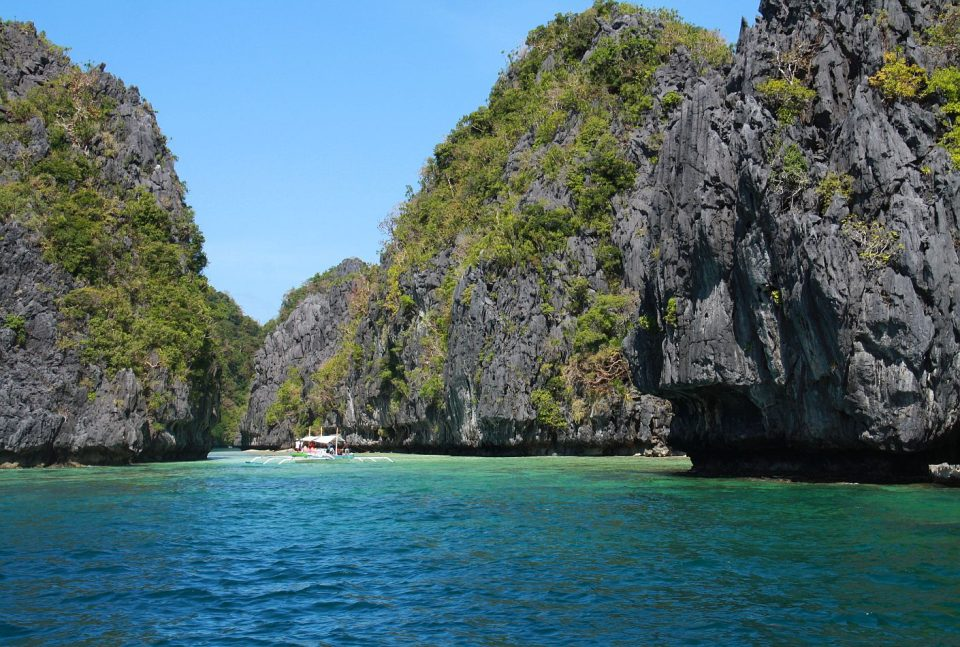
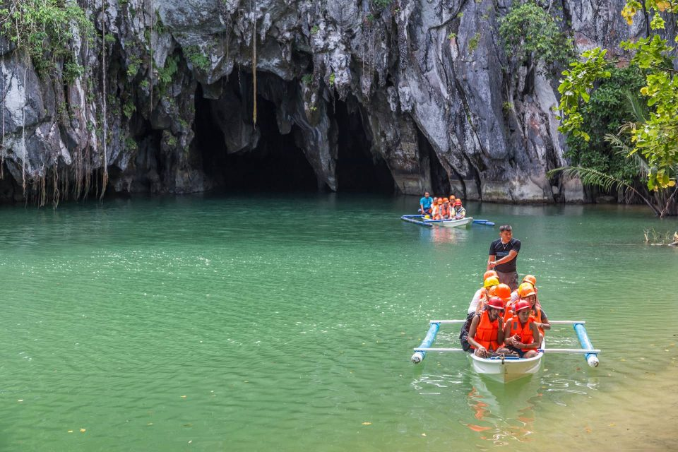
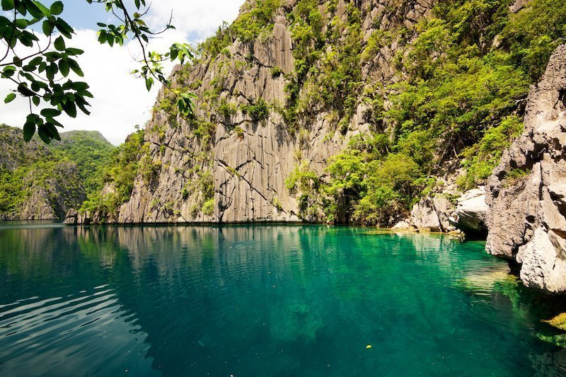

El Nido, Bacuit Bay
El Nido, nestled within the picturesque Bacuit Bay on the island of Palawan in the Philippines, is a tropical paradise that leaves
visitors in awe. Its natural beauty is simply breathtaking, with towering limestone cliffs that seem to touch the sky, crystal-clear
turquoise waters, and powdery white sand beaches. The bay is dotted with numerous hidden coves, lagoons, and secret beaches, making it a
haven for exploration and adventure. El Nido's underwater world is equally captivating, teeming with vibrant coral reefs and an array of
marine life, making it a mecca for snorkeling and diving enthusiasts. Beyond the water, lush jungles and dramatic karst formations provide
hiking and climbing opportunities. The town of El Nido itself offers a charming, laid-back atmosphere with a variety of accommodation options
and local eateries serving delicious Filipino cuisine. This enchanting destination is a must-visit for nature lovers and those seeking a tranquil
escape in a tropical paradise.
Puerto Princesa's Underground River
The Puerto Princesa Underground River in Palawan, Philippines, is a natural wonder that captivates all who venture into its depths. This UNESCO
World Heritage Site is a subterranean river system, winding its way through a stunning limestone cave that stretches for over 8 kilometers. As you navigate
through the underground river, you'll be mesmerized by the intricate rock formations, including impressive stalactites and stalagmites that seem to come
alive with imaginative shapes. The river flows through a pristine, ancient forest, offering a unique opportunity to spot diverse wildlife such as bats,
swiftlets, and monitor lizards. The experience is both awe-inspiring and eerie as you glide through the darkness, guided only by a boatman's spotlight.
Visiting the Puerto Princesa Underground River is a surreal journey into the heart of Palawan's natural beauty, a testament to the wonders that lie
beneath the earth's surface.
Coron and Calamian Islands
Coron and the Calamian Islands, located in the province of Palawan, Philippines, are a tropical paradise of unparalleled beauty. This archipelago boasts
jagged limestone cliffs, crystal-clear turquoise waters, and an abundance of marine life. Coron, in particular, is renowned for its captivating underwater
landscapes, including numerous World War II shipwrecks that have become popular dive sites, offering a haunting glimpse into history.The islands are a haven
for nature enthusiasts and adventurers, offering opportunities for hiking, island hopping, and exploring hidden lakes and lagoons. Kayangan Lake, with its
emerald waters surrounded by towering cliffs, is a standout attraction. The local culture and warm hospitality of the Calamian Islands' residents add to the
charm of this destination. Coron and the Calamian Islands are a true tropical paradise, offering a unique blend of natural wonders and cultural richness that
leaves an indelible mark on every visitor.
  